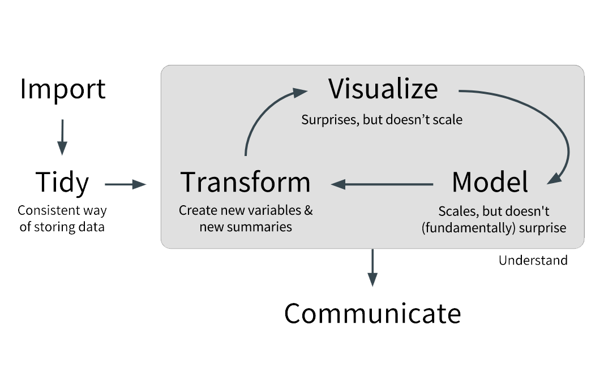
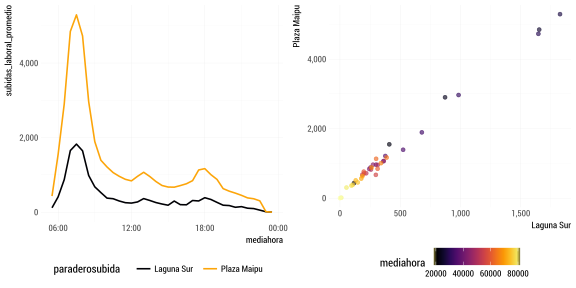
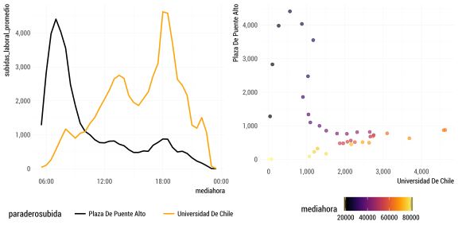
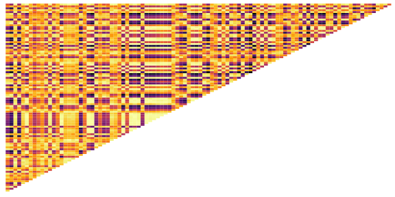
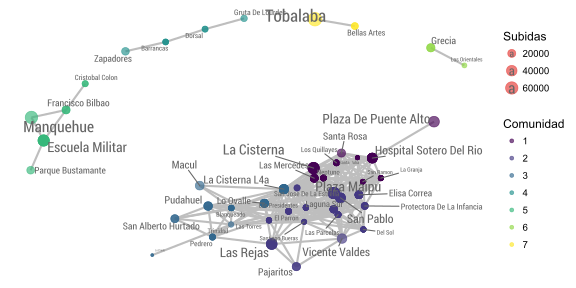
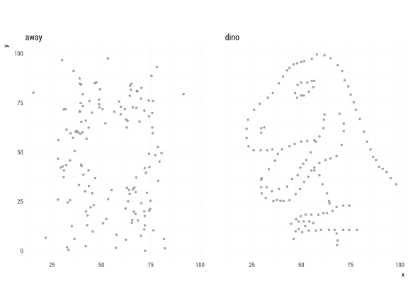
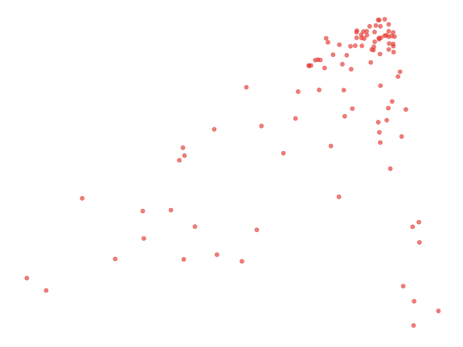
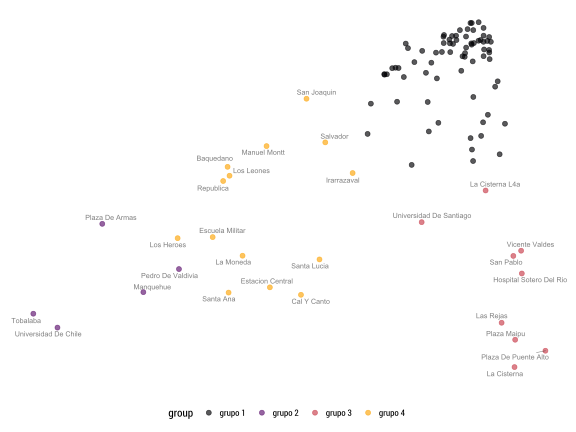
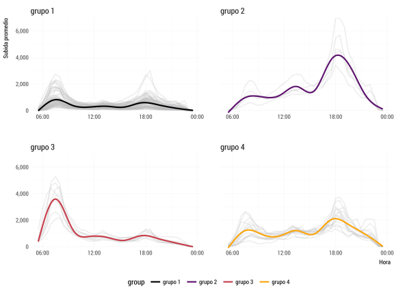

v|1i|2z|1 e|1n|2 e|2l|1 a|1n|2a|1l|2i|1s|1i|2s|1 d|1e|0 d|1a|1t|1o|3s|3
Joshua Kunst, Septiembre 2017
Que haré(mos)?
Workflow en Análisis de Datos
En la mayoría de los proyectos

- Es fácil, muy fácil equivocarse
- Pero más fácil es aprender de errores que de cosas que salen a la primera
Visualización en el AD
Ejemplo Guiado: Metro
Que estudiaremos?
- Exploremos que estaciones se comportan de forma similar
- Con la facilidad que R y highcharter nos ofrecen (espero!)
Se tienen el ingreso promedio de personas cada media hora
## # A tibble: 3,737 x 3
## paraderosubida mediahora subidas_laboral_promedio
## <chr> <dttm> <dbl>
## 1 Alcantara 1970-01-01 05:30:00 2.6
## 2 Alcantara 1970-01-01 06:00:00 13.2
## 3 Alcantara 1970-01-01 06:30:00 53.4
## 4 Alcantara 1970-01-01 07:00:00 184.8
## 5 Alcantara 1970-01-01 07:30:00 364.0
## 6 Alcantara 1970-01-01 08:00:00 546.2
## 7 Alcantara 1970-01-01 08:30:00 478.6
## 8 Alcantara 1970-01-01 09:00:00 359.0
## 9 Alcantara 1970-01-01 09:30:00 275.4
## 10 Alcantara 1970-01-01 10:00:00 229.6
## # ... with 3,727 more rowsPor ejemplo para Pedro De Valdivia
## # A tibble: 37 x 3
## paraderosubida mediahora subidas_laboral_promedio
## <chr> <dttm> <dbl>
## 1 Pedro De Valdivia 1970-01-01 05:30:00 36.8
## 2 Pedro De Valdivia 1970-01-01 06:00:00 167.8
## 3 Pedro De Valdivia 1970-01-01 06:30:00 314.6
## 4 Pedro De Valdivia 1970-01-01 07:00:00 758.8
## 5 Pedro De Valdivia 1970-01-01 07:30:00 1201.2
## 6 Pedro De Valdivia 1970-01-01 08:00:00 1469.8
## 7 Pedro De Valdivia 1970-01-01 08:30:00 1363.4
## 8 Pedro De Valdivia 1970-01-01 09:00:00 1151.0
## 9 Pedro De Valdivia 1970-01-01 09:30:00 999.0
## 10 Pedro De Valdivia 1970-01-01 10:00:00 911.0
## # ... with 27 more rowsSi exploramos Plaza Maipú con Laguna Sur

correlación: 0.996
Si exploramos Universidad De Chile con Plaza De Puente Alto

correlación: -0.372
Entonces ¿Y si calculamos todas las corrleaciones a pares?
## # A tibble: 5,050 x 3
## item1 item2 correlation
## <chr> <chr> <dbl>
## 1 Laguna Sur Las Parcelas 0.9979128
## 2 Plaza Maipu San Pablo 0.9962208
## 3 Laguna Sur Plaza Maipu 0.9960967
## 4 Del Sol Las Parcelas 0.9960689
## 5 La Granja San Ramon 0.9960405
## 6 Las Parcelas Plaza Maipu 0.9955500
## 7 Las Parcelas Protectora De La Infancia 0.9953642
## 8 Plaza Maipu Protectora De La Infancia 0.9953066
## 9 El Parron Lo Ovalle 0.9951739
## 10 Neptuno San Pablo 0.9951252
## # ... with 5,040 more rows¿Alguien dijo heatmap?

Claramente se ve…

Mmmm… Veamos solamente las asociaciones más fuertes

Yay!
Ahora sí!

Nop, no tanto
¿Qué tan cercanas son las estaciones según sus valores y no por UN solo valor?

Esto se llama dendograma
¿Y si resumimos? (vía autoencoder)

Ahora agrupamos por k-media… y?!

Mostramos grupos por separado y su comportamiento estimado
